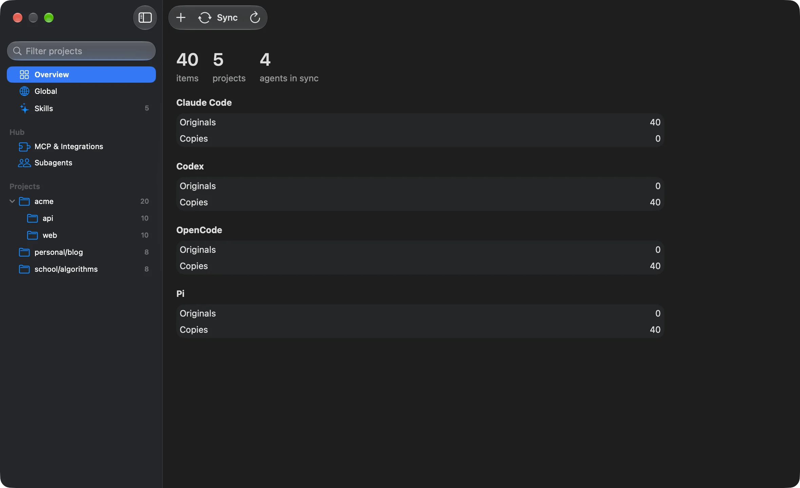
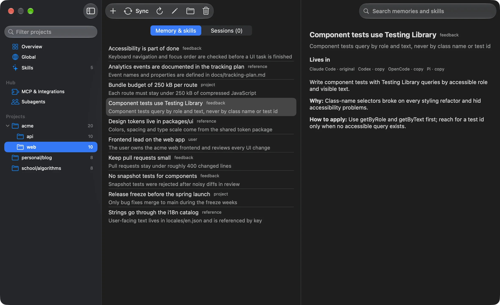
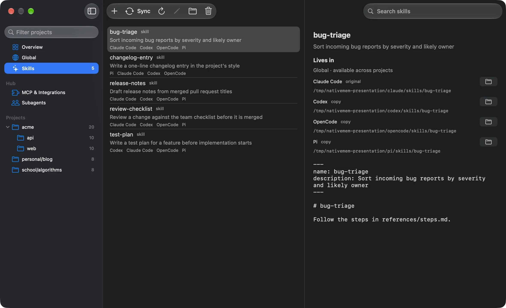

One integration. Every agent.
Connect local or HTTP MCP servers to the hub. Sign in with OAuth there, rather than copying client-bound tokens between agents. Secrets stay in the OS keychain.
Read about the hub
You already explained
how this project works.
You shouldn't have to again.
Carry memory, instructions, skills and conversations between your coding agents. In the files they already know.
Download for Mac macOS 14+ · Apple silicon & Intel Install instructions & source ↗Switch tools for the task, not because you're stuck with the one that remembers your project.
“Run the integration suite
before touching billing.”
nativemem reads what each agent stores, previews the differences, and writes native copies. The sync engine runs locally, without model calls.
Adapters read each agent's memory, global instructions, skill directories and sessions. Project scope stays attached.
nativemem status
See what will be added, updated or removed. Both sides changed? That's a conflict to review, not a guess to make.
nativemem sync
Apply the plan when you're ready. Overwrites and deletions get backups. Format checks pause incompatible writes.
nativemem sync --apply
Browse by project. Add a memory. See the exact folder behind every skill. Preview your next sync in a native Mac app.



Memory sync keeps native files in sync. The optional MCP hub does a different job: one connection to your integrations and headless agents.
Connect local or HTTP MCP servers to the hub. Sign in with OAuth there, rather than copying client-bound tokens between agents. Secrets stay in the OS keychain.
Read about the hubDefine a subagent once. Choose Claude Code, Codex, OpenCode or Pi and its model. Agents connected to the hub can call it as an MCP tool.
How subagents workThis is early software, built in the open. Start with a preview, inspect the plan, and keep your backups.
macOS 14+ · Apple silicon & Intel · MIT licensed
Release notes & checksums ↗
To install: open the DMG and drag nativemem to Applications. The app is ad-hoc signed, not notarized. If macOS blocks the first launch, go to System Settings → Privacy & Security → Open Anyway. Only approve a download you trust.
# Current stable Rust and a C compiler
git clone https://github.com/efekurucay/nativemem.git
cd nativemem
cargo install --path crates/cli
# See the plan. No writes yet.
nativemem doctor
nativemem sync
# Ready? Apply with backups.
nativemem sync --applyNo. Each agent reads its own files in its own format. nativemem translates between those native stores. The ledger keeps IDs, hashes and paths, not a second memory database.
Project memory, global instruction sections, global skills and session snapshots between Claude Code, Codex, OpenCode and Pi. Project skills are implemented for Claude Code, OpenCode and Pi; Codex project-skill sync is not implemented. Agent-specific limits and compatibility checks still apply.
Session copies use the target agent's format. Text and readable tool activity travel; provider-bound thinking, signatures and image contents don't. Once you continue a copy, it is left alone. Native resume behavior still needs verification in some agents; this is not a live, lossless session merge.
Memory, instruction and skill deletions propagate, with backups. Concurrent edits are reported as conflicts. Sessions use a separate snapshot policy: deletions never propagate, and edits to a continued copy never flow back.
The sync engine doesn't use the network or an LLM. The optional MCP hub connects to the servers and authorization endpoints you configure. A subagent uses its harness's model provider, permissions and billing.
The Mac app and Rust CLI are under active development. The Mac app is ad-hoc signed, not notarized. Linux CLI support is best-effort; Windows is not supported. Schema checks and fixture tests don't replace verification with real agents. See the verification checklist.
Your next agent
doesn't have to
start from scratch.